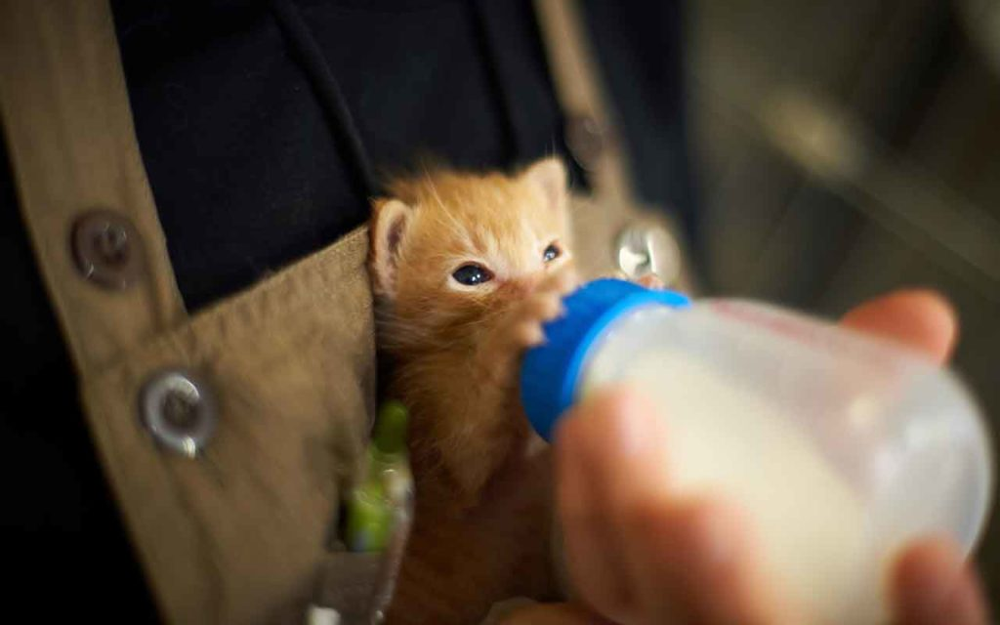

Для начала — немного статистики. Вес новорождённого котенка в норме колеблется от 75 до 150 граммов, в зависимости от пола, генетики, количества детёнышей в помете и рациона мамы-кошки. За первый месяц жизни (его называют подсосным периодом) вес здорового малыша увеличивается в 4 раза. Котята рождаются глухими и слепыми.
Слух появляется на пятый день, к концу второй недели новорожденный начинает ориентироваться по звукам, а к месячному возрасту этот орган чувств формируется полностью.
Примерно на 7–15-й день после рождения у котят открываются глаза, ещё 3–4 дня уходит на развитие окончательной глубины зрения. «Координация» зрения и слуха занимает ещё несколько дней. Уверенно ходить на лапах малыш начинает примерно в двухнедельном возрасте, а к трём неделям он уже достаточно ловок, чтобы почесать за ухом лапой. От интересных фактов о котятах переходим к действиям.
Как ухаживать за котёнком
Какие действия необходимо предпринять, чтобы попавший к вам котёнок развивался в соответствии с нормой? Ведь именно на тот самый подсосный период, первый месяц жизни, приходится основное развитие кошки? Скажем прямо: эти 4 недели будут непростыми. Но ведь любовь способна придавать сил. Да и то чудо, которое будет происходить на ваших глазах, стоит того, чтобы преодолеть некоторые неудобства.
Несколько слов о молоке
Всем ясно, что малыша нужно хорошо кормить молоком. В идеале с молозивом, а потом и с молоком матери котёнок получает антитела, отвечающие за иммунитет, а также все питательные вещества, необходимые для роста и развития. Но, если котик остался сиротой, и другой кошки, которая могла бы кормить чужого малыша, тоже нет рядом, вам придется стать кормящей матерью и познакомиться с новыми фактами про котят.
Особое внимание! Котят нельзя кормить цельным коровьим молоком! В силу кошачьей физиологии оно плохо переваривается, сворачивается в желудке и образует там комок. Это грозит серьёзными проблемами.Чем заменить кошачье молоко? Конечно, лучше всего специальными смесями, которые продаются в зоомагазинах. Если же такой возможности нет, подойдут и обычные детские смеси, которые продаются в каждой торговой точке. Разводить их нужно тёплой водой — готовое питание должно быть температурой примерно 30 градусов.
Новорождённый котёнок должен есть до 12 раз в сутки, к концу месяца число кормлений можно сократить в два раза. Кормить малютку удобнее всего опять-таки с помощью специальной соски для котят, но при её отсутствии подойдет и пластиковая пипетка с затупленным концом. Спешка в этом процессе не нужна – поскольку кроха еще слишком мал, нужно проявить терпение.
Кормить котёнка нужно, когда он лежит на животике, в противном случае он может отрыгивать пищу и останется голодным. Определить, правильно ли вы кормите котёнка, вам поможет регулярное измерение его веса. Для этого нужно использовать, конечно, кухонные, а не напольные весы. Если пару дней подряд цифры показывают, что прибавления нет — дело плохо, без помощи ветеринара не обойтись.
Главное — тепло
Новорождённые котята не могут регулировать температуру тела — это ещё один важный факт о котятах, который нужно знать. В идеале первый месяц малыш проводит в уютном месте вместе с мамой и братьями-сестрами. Если же семью котенку заменил человек – ваша обязанность обеспечить ему постоянное тепло. Будет ли это тепло вашего тела, грелки, носки, наполненные нагретым зерном, или бутылки с горячей водой – решайте сами. Только помните, что между котенком и источником тепла должна быть мягкая изоляция, не обожгите младенца. Нагревательную лампу использовать ни в коем случае нельзя и не забывайте об обязательном притоке свежего воздуха!
В-третьих, вам придется взять на себя еще одну весьма деликатную функцию мамы-кошки. После еды обычно она тщательно вылизывает промежность своих детей, стимулируя выведение из организма новорожденного мочи и кала. Конечно, мы не рекомендуем вам повторять ее подвиг точь-в-точь. Массировать малютку вполне можно теплым влажным полотенцем или мягкой салфеткой. При этом он должен пописать во время каждого такого массажа, а выведение кала считается нормальным один-два раза в день.